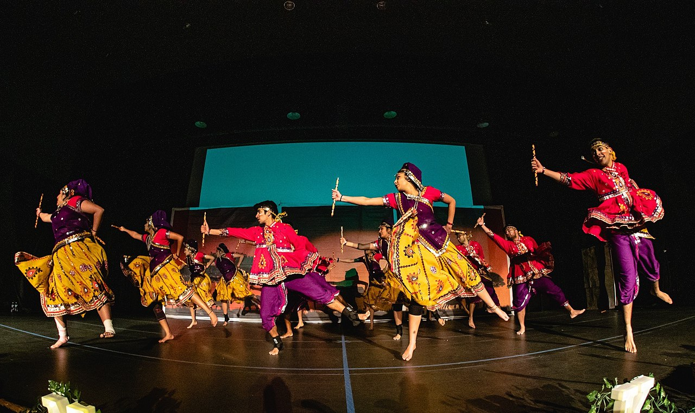

Gujarat is the Land of Festivals. The celebrations of festivals and fairs are accompanied with Music and Dance that breathe the soul fresh with vigor and joy. Blessed with rich Performing Arts, Dance and dance forms in Gujarat are popular throughout the world. Dating back to the ancient era of Krishna, singing and dancing with ‘Flute’ and other Instruments with the dance forms like Garba, Garbi and Raas is the most popular Dance celebrations in Gujarat. A legendary unique Folk Dance form also has variations with Dandia or stick Raas. There are different styles of executing dandiya steps like Dodhiyu, simple five,simple seven, popatiyu, Trikoniya, Lehree, three claps, butterfly, hudo, two claps and many more.
Performed during Navratri Celebrations, a festival of music and dance, these music and dance forms are enjoyed by all communities, all age groups and in all cities in Gujarat. Even people all over the world come to Gujarat especially to enjoy this traditional and religious festival.
At Gandhinagar, Gujarat, Cultural Programs like Vasantosav, Kutchh Utsav, etc are held with Interactive cultural music and dance performances from all over Gujarat cities. Modhera Dance Festival is one of the major annual, Classical and Traditional Dance Festival in Gujarat. All Artists and emerging performing artists exhibit their talent at the backdrop of the Sun Temple at this annual event hosted by Gujarat department.
Gujarat Music and dance performers build innovations in music, choreography, and costumes and have enthralled audience with its beauty and tradition. Gujarat has ‘Arts’ with mass appeal. Hence, Indian Classical Dance forms of Bharat Natyam, Kathak and Odissi also find appealing dance forms in Gujarat. Western dances like Salsa, Jazz, Hip Hop, Rock n Roll, Waltz etc, are gaining popularity in major cities in Gujarat.

Garba, also spelled garaba, singular garbo, type of Indian dance commonly performed at festivals and on other special occasions in the state of Gujarat, India. It is a joyful style of dance, based on a circular pattern and characterized by a sweeping action from side to side. Garba performances often include singing and a musical accompaniment traditionally provided by dhol (double-headed drum) and the similar but smaller dholak; hand clapping; and assorted metallic idiophones, such as cymbals. Historically, the shehnai (a double-reed instrument) guided the singers, but by the early 21st century that instrument had largely been replaced by a synthesizer or harmonium.
Garba dances celebrate fertility, honour womanhood, and pay respect to any of an array of mother goddesses. In Gujarat the dances customarily mark a girl’s first menstrual cycle and, later, her imminent marriage. Garba dancing also takes place during the nine-day Navratri festival, held annually during the Hindu month of Ashvina (September–October). Although men may participate on some occasions, women are the typical performers of garba.
The basic dance formation is that of a circle that moves counterclockwise; if space is constrained or there are many participants, dancers form concentric circles that move in opposite directions. Ultimately, the performers circle around an image of a mother goddess, such as Durga, or around a symbolic representation of her creative energy—often an illuminated clay pot or a water-filled vessel. Dancing begins slowly and gradually increases in speed.
Garba performance has spread beyond Gujarat to enjoy popularity not only in many other parts of India but in Hindu communities worldwide. The dances are widely performed at the Holi spring festival. Especially since the late 20th century, there has been a notable proliferation of garba competitions and university dance troupes. Folk dances similar to garba can also be found in other parts of India, particularly in Tamil Nadu, in the southeast, and in Rajasthan, the northeastern neighbour of Gujarat.

Raas or Dandiya Raas is the socio-religious folk dance originating from Indian state of Gujarat and popularly performed in the festival of Navaratri. The dance is performed in the Marwar region of Rajasthan too. The etymology of Dandiya-Raas is in Sanskrit.Dandiya-raas exists in the different forms, including the collegiate competitive form.The dance style is now in a competitive format and a traditional format.
The competition season for Garba-Raas takes place at the beginning of each calendar year (January to April). In order to compete under the RAS organization, teams must submit applications to the certified competitions, known as Bid Competitions, by a set deadline. The application commonly includes an audition video of the team displaying a dance to three songs.Eight teams are then selected and invited to compete by the board of each individual competition. Each competition awards the top three teams, 1st, 2nd, and 3rd place with 4 bid points, 2 bid points, and 1 bid point, respectively. The 8 teams with the highest cumulative bid point total are invited to the national RAS competition.
Men and women traditionally play dandiya-raas and the dance operates in pairs, meaning the group must contain an even number. Generally, two lines are formed, with partners facing each other: The lines move clockwise, and each person steps forward to hit sticks with their partner, then moves on two people. At the end of the line, each turns and joins the line opposite, so the movement is continuous. The music starts very slowly. It is an eight-beat time cycle called Kaherva and performed in the following manner: on the first beat, your own sticks are hit together, followed by right sticks with your partner, then left sticks (or the same stick if using one). Each one then turns away to the left to hit their own sticks together before turning back to the partner to hit the right sticks again, and before moving on two places to a new partner.

The Raas is a dance form that is performed in such a way that includes beating of pairs of sticks (dandiya) together. The Raas is a favorite dance of Krishna which can be seen in paintings and artwork. The Men and women often dance together in Raas. Nowadays Raas includes orchestras instead of the traditional drummer. It is one of the energetic Gujarat Folk Dances.